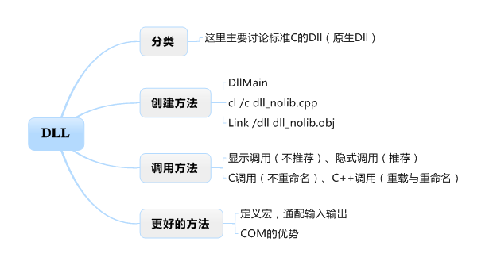

本文搜集、整理了网上的一些资料，用最简单的文字介绍dll及其使用方法
提纲如下：

1、动态链接库(DLL)的概念与静态链接库的区别
DLL是建立在客户/服务器通信的概念上，包含若干函数、类或资源的库文件，函数和数据被存储在一个DLL（服务器）上并由一个或多个客户导出而使 用，这些客户可以是应用程序或者是其它的DLL。DLL库不同于静态库，在静态库情况下，函数和数据被编译进一个二进制文件（通常扩展名为.LIB）， Visual C++的编译器在处理程序代码时将从静态库中恢复这些函数和数据并把他们和应用程序中的其他模块组合在一起生成可执行文件。这个过程称为”静态链接”，此 时因为应用程序所需的全部内容都是从库中复制了出来，*所以静态库本身并不需要与可执行文件一起发行。
在动态库的情况下，有两个文件，一个是引入库（.LIB）文件，一个是DLL文件，引入库文件包含被DLL导出的函数的名称和位置，DLL包含实际的 函数和数据，应用程序使用LIB文件链接到所需要使用的DLL文件，库中的函数和数据并不复制到可执行文件中，因此在应用程序的可执行文件中，存放的不是 被调用的函数代码，而是DLL中所要调用的函数的内存地址，这样当一个或多个应用程序运行是再把程序代码和被调用的函数代码链接起来，从而节省了内存资 源。从上面的说明可以看出，.DLL和.LIB文件必须随应用程序一起发行，否则应用程序将会产生错误。
2、DLL的种类
微软的Visual C++支持三种DLL，它们分别是
Non-MFC Dll（非MFC动态库）、Regular Dll（常规DLL）、Extension Dll（扩展DLL）。
Non-MFC DLL指的是不用MFC的类库结构，直接用C语言写的DLL，其导出的函数是标准的C接口，能被非MFC或MFC编写的应用程序所调用。
Regular DLL:和下述的Extension Dlls一样，是用MFC类库编写的，它的一个明显的特点是在源文件里有一个继承CWinApp的类（注意：此类DLL虽然从CWinApp派生，但没有 消息循环）,被导出的函数是C函数、C++类或者C++成员函数（注意不要把术语C++类与MFC的微软基础C++类相混淆），调用常规DLL的应用程序 不必是MFC应用程序，只要是能调用类C函数的应用程序就可以，它们可以是在Visual C++、Dephi、Visual Basic、Borland C等编译环境下利用DLL开发应用程序。常规DLL又可细分成静态链接到MFC和动态链接到MFC上的，这两种常规DLL的区别将在下面介绍。
扩展DLL用于导出增强MFC基础类的函数或子类，用这种类型的动态链接库，可以用来输出一个从MFC所继承下来的类。扩展DLL是使用MFC的动态链接版本所创建的，并且它只被用MFC类库所编写的应用程序所调用。例如你已经创建了一从MFC的CtoolBar类 的派生类用于创建一个新的工具栏，为了导出这个类，你必须把它放到一个MFC扩展的DLL中。扩展DLL 和常规DLL不一样，它没有一个从CWinApp继承而来的类的对象，所以，开发人员必须在DLL中的DllMain函数添加初始化代码和结束代码。
3、创建Dll
这里我希望用原生的方式，介绍dll最核心的思想，所以只用Non_MFC的dll，而且不用VC，用手动编译的方式
（1）创建最简单的dll
1 | #include //把它换成也可以 ，后者是前者的超集 |
其中DllMain是每个dll的入口函数，如同c的main函数一样。DllMain带有三个参数，hModule表 示本dll的实例句柄（听不懂就不理它，写过windows程序的自然懂），dwReason表示dll当前所 处的状态，例如DLL_PROCESS_ATTACH表示dll刚刚被加载到一个进程 中，DLL_PROCESS_DETACH表示dll刚刚从一个进程中卸载。当然还有表示加载到线程中和从 线程中卸载的状态，这里省略。最后一个参数是一个保留参数（目前和dll的一些状态相关，但是 很少使用）。
从上面的程序可以看出，当dll被加载到一个进程中时，dll打印”Dll is attached!”语句；当dll从进 程中卸载时，打印”Dll is detached!”语句。
编译dll需要以下两条命令：
cl /c dll_nolib.cpp
这条命令会将cpp编译为obj文件，若不使用/c参数则cl还会试图继续将obj链接为exe，但是这里 是一个dll，没有main函数，因此会报错。不要紧，继续使用链接命令。
Link /dll dll_nolib.obj 这条命令会生成dll_nolib.dll。
（2）创建带输出函数的dll，dll没有输出函数就没意义了，也有两种方法：
第一种：定义一个def文件
这个dll的def文件如下：dll_def.def
; dll_def module-definition file
你会发现def的语法很简单，首先是LIBRARY关键字，指定dll的名字；然后一个可选的关键字 DESCRIPTION，后面写上版权等信息（不写也可以）；最后是EXPORTS关键字，后面写上dll 中所有要输出的函数名或变量名，然后接上@以及依次编号的数字（从1到N），最后接上修饰符。
第二种：为每个dll写def显得很繁杂，目前def使用已经比较少了，更多的是使用declspec(dllexport)在源代码中定义dll的输出函数
去掉def文件，并在每个要输出的函数前面加上声明declspec(dllexport)，例如：__declspec(dllexport) void FuncInDll (void)
编译并连接生成dll
Cl /c dll_withlib.cpp
Link /dll dll_withlib.obj
然后使用dumpbin命令查看，得到：
1 0 00001000 ?FuncInDll@@YAXXZ
可知编译后的函数名为?FuncInDll@@YAXXZ，而并不是FuncInDll，这是因为c++编译器基于函数重载的考虑，会更改函数名，这样使用显式调用的时候，也必须使用这个更改后的函数名，这显然给客户带来麻烦。为了避免这种现象，可以使用extern “C”指令来命令c++编译器以c编译器的方式来命名该函数。修改后的函数声明为：extern "C" __declspec(dllexport) void FuncInDll (void)
4、DLL的调用方法
使用dll大体上有两种方式，显式调用和隐式调用。
（1）这里首先介绍显式调用。这种方法不推荐，因为太麻烦了。但还是介绍一下~
1 | int main(void) |
（2）隐式调用
而隐式调用能够像使用c函数库一样使用dll中的函数，非常方便快捷。
下面是一个隐式调用的例子：dll包含两个文件dll_withlibAndH.cpp和dll_withlibAndH.h。
代码如下：
dll_withlibAndH.h
1 | extern C __declspec(dllexport) void FuncInDll (void); |
dll_withlibAndH.cpp
1 |
|
在进行隐式调用的时候需要在客户端引入头文件，并在链接时指明dll对应的lib文件（dll只要有函数输出，则链接的时候会产生一个与dll同名的lib文件）位置和名称。然后如同调用api函数库中的函数一样调用dll中的函数，不需要显式的LoadLibrary和GetProcAddress。使用最为方便。客户端代码如下：
dll_withlibAndH_client.cpp
1 | #include dll_withLibAndH.h |
上面一种隐式调用的方法很不错，但是在调用DLL中的对象和重载函数时会出现问题。因为使用extern “C”修饰了输出函数，因此重载函数肯定是会出问题的，因为它们都将被编译为同一个输出符号串（c语言是不支持重载的）。
事实上不使用extern “C”是可行的，这时函数会被编译为c++符号串，例如（?FuncInDll@@YAXH@Z、 ?FuncInDll@@YAXXZ），当客户端也是c++时，也能正确的隐式调用。
5、更好的方法，事实上VC制作dll就是采用的这种方法，请看注释：
dll2.h
1 | #includedll1.h |
dll2.cpp
1 | //在cpp文件中声明这个宏，说明我们是在导出也就是 __declspec(dllexport) |
6、小结与补充：
牢记一点，说到底，DLL是对应C语言的动态链接技术，在输出C函数和变量时显得方便快捷；而在输出C++类、函数时需要通过各种手段，而且也并没有完美的解决方案，除非客户端也是c++。记住，只有COM是对应C++语言的技术。
显式调用和隐式调用
何时使用显式调用？何时使用隐式调用？我认为，只有一个时候使用显式调用是合理的，就是当客户端不是C/C++的时候。这时是无法隐式调用的。例如用VB调用C++写的dll。（VB我不会，所以没有例子）Def和__declspec(dllexport)其实def的功能相当于extern C __declspec(dllexport)，所以它也仅能处理C函数，而不能处理重载函数。而__declspec(dllexport) __declspec(dllimport)配合使用能够适应任何情况，因此__declspec(dllexport)是更为先进的方法。所以，目前普遍的看法是不使用def文件，我也同意这个看法。
从其它语言调用DLL
从其它编程语言中调用DLL，有两个最大的问题，第一个就是函数符号的问题，前面已经多次提过了。这里有个两难选择，若使用extern “C”，则函数名称保持不变，调用较方便，但是不支持函数重载等一系列c++功能；若不使用extern “C”，则调用前要查看编译后的符号，非常不方便。
第二个问题就是函数调用压栈顺序的问题，即__cdecl和__stdcall的问题。__cdecl是常规的C/C++调用约定，这种调用约定下，函数调用后栈的清理工作是由调用者完成的。__stdcall是标准的调用约定，即这些函数将在返回到调用者之前将参数从栈中删除。
这两个问题DLL都不能很好的解决，只能说凑合着用。但是在COM中，都得到了完美的解决。所以，要在Windows平台实现语言无关性，还是只有使用COM中间件。
总而言之，除非客户端也使用C++，否则dll是不便于支持函数重载、类等c++特性的。DLL对c函数的支持很好，我想这也是为什么windows的函数库使用C加dll实现的理由之一。
在VC中编写DLL
在VC中创建、编译、链接dll是非常方便的，点击file=>New=>Project=>Win32=>Dynamic-LinkLibrary，输入dll名称dll_InVC然后点击确定。然后选择A DLL that export some symbols，点击Finish。即可得到一个完整的DLL。